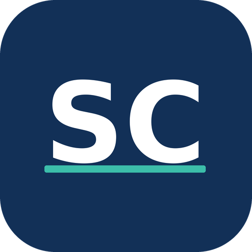

Coaching für Job, Sprache, Sport und GesundheitOb neu in der Schweiz, auf Stellensuche, im Training oder als Firma mit internationalen Mitarbeitenden: Ich begleite Menschen und Betriebe dort, wo Sprache, Beruf und Gesundheit zusammenwirken. Alles einzeln buchbar — aus einer Hand.
Die meisten Anbieter in der Region machen entweder Sprache oder Bewegung. Ich verbinde beides — als ausgebildeter Sportwissenschafter und Germanist, Erwachsenenbildner und DaZ-Lehrperson mit SVEB I, fide und ADEFA. Jede Leistung ist einzeln buchbar — von Privatpersonen genauso wie von Firmen.
für Privat & Firmen
für Privat & Firmen
für Privat & Firmen
für Privat & Firmen
für Firmen
Kombination & Beratung
Typische Wege — als Paket oder einzeln, wie es zu Ihrer Situation passt.
Ihre Mitarbeitenden scheitern selten am Fach — sondern an Sprache, Alltag und Belastung. Ich übernehme das Drumherum, damit Sie keine Fachkraft nach 12 Monaten verlieren.
Konditionen auf Anfrage — jedes Programm wird auf Betrieb und Team zugeschnitten.
Klar, planbar und ohne wochenlange Vorbereitung. Ein Erstgespräch genügt, um alles zu starten.
30 Minuten, kostenlos — per Video oder Telefon. Wir klären Ziel, Zeitrahmen und Niveau.
Kurzer Einstufungstest und Zielvereinbarung. Sie erhalten ein Programm mit klaren Meilensteinen.
Live-Sessions plus asynchrones Lernen auf der eigenen Plattform. Sie arbeiten zwischen den Terminen selbstständig weiter.
Abschluss mit Nachweis: Zertifikatsniveau, fertiges Bewerbungsdossier oder messbar bessere Fitness.
Ich bin Renato Santiago und begleite seit 2015 Menschen, die vor einem Neustart stehen: als DaZ-Lehrperson, Job-Coach, Kursleiter für Bewerbungskurse und akademischer Leiter an verschiedenen Schulen in Luzern.
Was mich von klassischen Sprachschulen unterscheidet: Ich habe Sportwissenschaft und Germanistik studiert (Bachelor of Science, Masterstudium) und arbeite seit 2014 als Trainer — im Leistungs- wie im Amateursport. Sprache, Training und Ernährung greifen für mich ineinander: Wer sich im Alltag sicher bewegt, sich wohl in seiner Haut fühlt und sich verständigen kann, gehört dazu. Deshalb biete ich das an — einzeln oder als Paket.
Ich arbeite ergebnisorientiert: Sie bekommen ein Programm mit klarem Ziel. Zwischen den Live-Terminen lernen Sie auf meiner eigenen Lernplattform weiter — Vokabeltraining, Aufgaben, Feedback. So bleibt der Fortschritt messbar und die Zeit, die wir gemeinsam verbringen, bleibt wertvoll.
SVEB I fide ADEFA BSc Sportwissenschaft Germanistik J+S Leiter
Einzeln geht immer. Die Pakete — zum Beispiel Soft Landing — sind nur Vorschläge aus dem Baukasten und lassen sich kürzen, erweitern oder kombinieren. Einzelne Lektionen, ein Trainingsplan oder eine Ernährungsberatung sind genauso buchbar.
Ein fehlgeschlagener Auslandseinsatz kostet Unternehmen erfahrungsgemäss ein Vielfaches des Integrationsprogramms — durch Neurekrutierung, Vakanz und verlorene Produktivität. Das Programm ist entsprechend eine Risikoabsicherung, keine Weiterbildungskosten-Position. Konditionen auf Anfrage.
Für Menschen, die neu in der Schweiz sind und beruflich ankommen wollen — vom ersten Tag an. Ebenfalls geeignet für Partner und Partnerinnen.
Nein. Die Live-Sessions finden per Video statt, die Lernplattform nutzen Sie zeitunabhängig. Vor-Ort-Termine in der Deutschschweiz sind auf Wunsch möglich, zum Beispiel für Bewerbungs- oder Behördenbegleitung.
Ja — als Beratung zu Gewohnheiten, Alltagstauglichkeit und Sporternährung. Keine Ernährungstherapie, keine Heilbehandlung und keine Krankenkassenabrechnung. Braucht jemand medizinische Ernährung, verweise ich an eine anerkannte Fachperson.
In der Regel innerhalb von zwei Wochen nach dem Erstgespräch. Für dringende Fälle (Stellenantritt bereits vereinbart) sind auch kurzfristige Starttermine möglich.
Santiago Coaching · Coaching für Job, Sprache, Sport und Gesundheit
Ein kurzes Erstgespräch genügt, um zu klären, welche Leistung oder welches Programm zu Ihnen oder Ihren Mitarbeitenden passt. Kostenlos, unverbindlich, 30 Minuten.